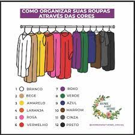

Receitas fits
PANQUECA DE BANANA COM AVEIA.

INGREDIENTES.
1 Banana.
1 Ovo.
4 Colheres de farelo de aveia.
1 Colher (café) de canela ou cacau magro em pó.
Óleo de coco.
MODO DE PREPARO.
Amasse a banana e junte-a ao ovo, à aveia e à canela, batendo tudo com um garfo.
O ideal é não usar liquidificador ou mixer para bater, pois a massa pode ficar muito líquida.
Unte uma frigideira com óleo de coco, doure a massa em porções e está pronta!
PARA MAIS RECEITAS, ACESSE.
Outras receitas.
PARA VER TODOS OS ARQUIVOS.
Acesse o GitHub para pegar os exemplos feitos